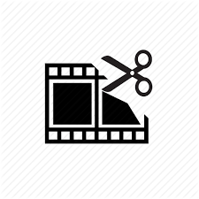

This web app comes in handy when you need to cut a small video file. It does not require installation, and it works in your browser.

Crop video
Cropping allows you to frame the video to the desired area or change frame proportions.
Rotate video
You can rotate your video 90, 180 or 270 degrees. It can be useful when a portrait scene was shot in a landscape mode or vice versa.
Any format you can think of
The app supports almost every video format out there. If your file fails to open, then it is probably damaged or it is too big.
Video editing online
The app can cut video files right in your browser window. Files of up to 500 Mb are supported, and we are about to raise this limit.
Easy video trimming
After uploading your file, you can choose the quality and format of the output file. There are no complicated controls — every feature is just one or two clicks away.
Security guaranteed
Your files are automatically deleted from our servers a few hours after you are done working with them. Nobody has access to them except you.
Free to use
Our application will always remain free. You don’t have to buy a license or pay for extra features or downloads.